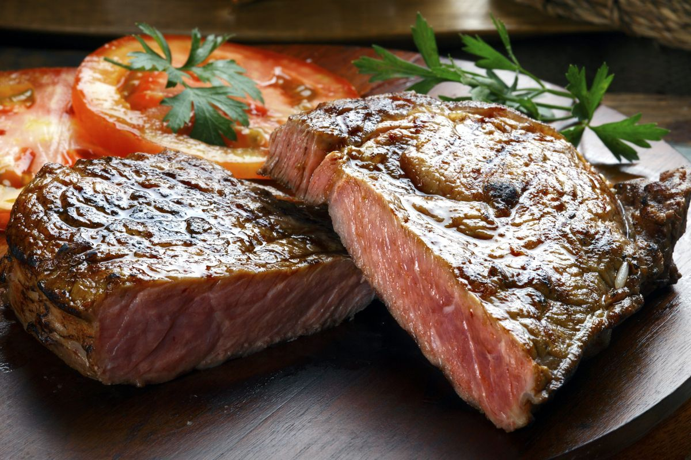

Balsamic Marinated Flank Steak

Ingredients
- 2 garlic cloves, sliced
- 1 tablespoon rosemary leaves
- 1 tablespoon dried oregano
- 2 tablespoons whole-grain mustard
- 1/2 cup balsamic vinegar
- 1 cup extra-virgin olive oil, plus more for grilling
- Kosher salt
- Freshly ground pepper
- One 3-pound flank steak
Directions
- In a blender, combine the garlic, rosemary, oregano, mustard and vinegar and puree until the garlic is minced. With the machine on, gradually add the oil and blend until creamy. Season lightly with salt and pepper.
- Add the meat to a glass or ceramic baking dish and pour all but 1/4 cup of the vinaigrette on top, turn the meat to coat. Cover with plastic wrap and refrigerate for at least 4 hours and up to 24 hours.
- Light a grill and oil the grates. Remove the steak from the marinade, letting the excess drip off. Season with salt and pepper. Grill the steak over moderate heat, turning occasionally, until lightly charred and an instant-read thermometer inserted in the thickest part registers 125°, 10 to 12 minutes. Transfer the steak to a carving board and let rest for 5 minutes. Thinly slice the meat against the grain and serve, passing the remaining vinaigrette at the table.